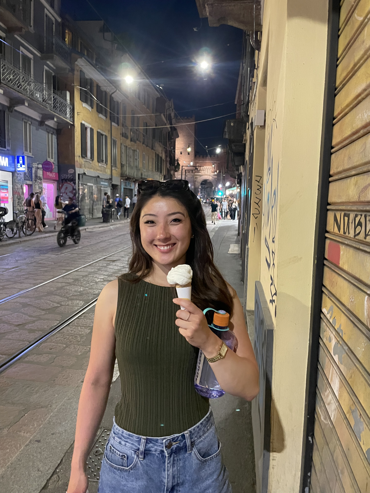
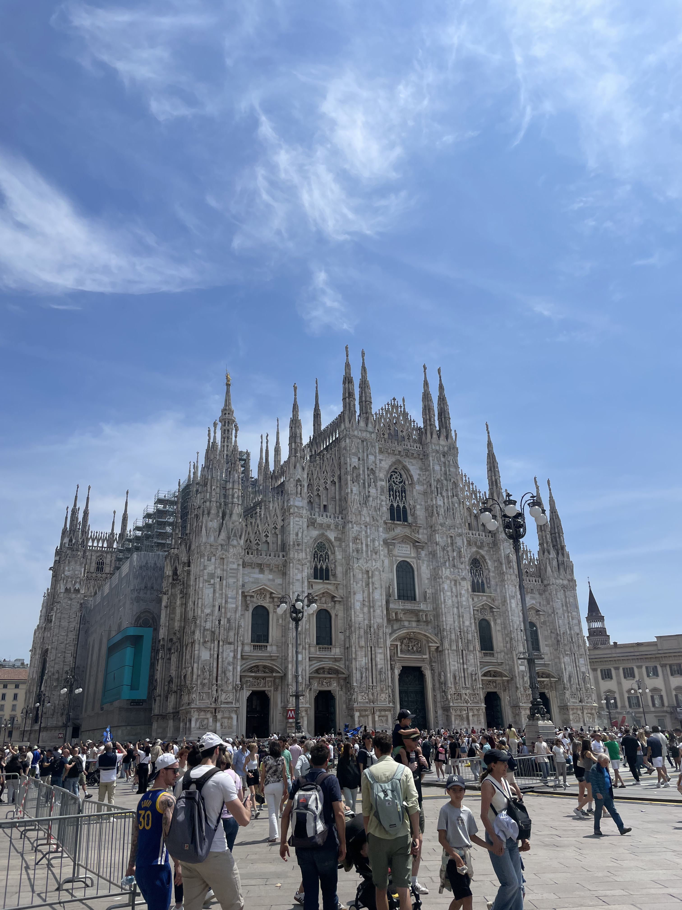
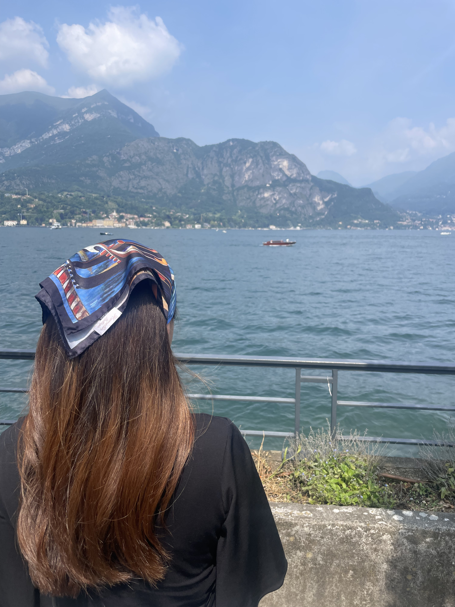

← Travel
Milan 2025
I was sent to a project in the North of Italy, so I dragged Sophie along for a Milanese experience!

30th May 2025
The previous day we had hopped on a Ryanair flight into Milan BGY airport and snagged ourselves some goodies at Carrefour before crashing for the night. Waking up this morning I headed out to MXP6, 40 mins along a 130kph highway. But first I had to navigate the winding streets of Milan. Dirving here was crazy because drivers would shove their car in wherever they could fit it. Without lane lines most of the time, there was no clear path to take which resulted sometimes in someone driving in the middle of what seemed to be a two lane road but also three drivers side by side when there only seemed space for two. It wasn't much easier on the freeway as cars were speeding past at twice my speed even though I was going the speed limit. I reached my destination unscathed and enjoyed a calm preparation day ahead of the robotics zone merge on Saturday. Driving back Sophie and I visitied Naviglia, where we ate delicious risotto and veal. We followed this with a stunning walk along the canals and to a concert outside the cathedral. We topped off the night with some fior di latte and melon gelato!

1st June 2025
I woke up at 4:45am to head onto site. It was so early the traffic lights had not yet woken up and were flashing amber to indicate that anyone may go when they please. Scary! The zone merge was chaotic, with Italians shouting at each other, trapping people inside the floor and delaying us until 9pm at night. When I got back to the hotel in Milan, Sophie and I were so tired we didn't even go out and instead fell asleep with bellies full of Italian pizza.

2nd June 2025
Finally free of work, we set off toward Lake Como. The drive was peaceful, although around Lake Como the roads became very narrow. Couple with the sometimes reckless driving standard, it was a very nervy 20 minutes to Bellagio. We parked and strolled along this beatiful lakeside town with the sun on our backs. We filled up on paninis and gelato and admired the stunning view and weather that we had been deprived of for so long by living in London. We stopped off at another restraunt for drinks, a peach and an Italian bitter drink. UNfortunately, our time had come to an end abruptly, and we cruised down the Italian towns blasting Italian music and reflecting on a fun weekend in Milan.